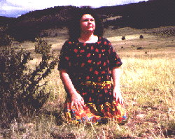

| HOME | SITE MAP |
THIS SITE IS UNDER CONSTRUCTION

Tatiana de la Tierra was born in Colombia, where she was a polite, cheerful girl who wore frilly dresses and ruffled underwear and frolicked among the fields of coffee and sugar cane. This all came to an end when she relocated to Miami with her family when she was just seven years old. This pissed her off, which explains why she says "Bitch", "Fuck You" and "No Me Joda" a lot. Still, little Tatiana enjoyed becoming an American. Where else can you learn to masturbate while invoking Donny Osmond from the posters in your bedroom wall? For her twenty-first birthday, Tatiana became an earth momma and went to live on the Planet of Lesbos, where she became a feminist vegetarian lesbian-separatist massage therapist who wore Birkenstocks. This got boring after a while, so she became a smut photographer, a cocaine dealer and a reader for 1-800-Bruja-For-A-Buck. Then she got busted and went into hiding, which is how she made it to El Paso. Tatiana has led a very complicated life and, as a result, she became a writer. She's had all sorts of writings published, all over the place, but we are not at liberty to name them because, after all, she is a fugitive and living anonymously. Currently, Tatiana is a prisoner of UTEP's MFA Creative Writing Program, where her soft-spoken demeanor and pleasant personality make her a favorite among her students, professors and colleagues.
CREATIVE NON-FICTION Y CUENTOS:
Rebirthing (play excerpt)
The Home That Is A Shadow In My Soul
Activist Survival Guide
Link
Birth-Smell
Jail For Beginners
El Power y la Palabra
Foot-Wise
Ears
Real Women
Lesbian Journey Through The Fog
Not of This Country
Resident Alien
Link
Chocolate
True Cunt Stories
Palabras
Ana Gabriel Cuts to the Corazon
La Violencia
Coming Out and Creating
POEMAS:
Never
Juego
Mas Juego
De Ambiente Espanol
Roasted Garlic Mashed Potatos
El Dia Que Aprendi a Rezar
Peluda
Mask
Biop-see
Fuck It
Research Methods
Cuando Se Dice "Soy"
Neurotic Love Letters
This web site is maintained as a comunity service by the Lesbian Legacy Collection Archives, Los Angeles Link